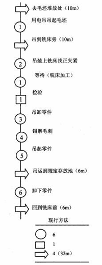
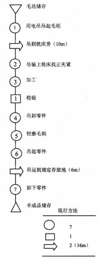
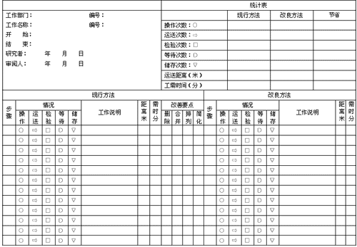

流程程序图绘制
流程程序图与工艺程序图极为相似，其差别仅是增加了“搬运、储存、等待”三种符号，及在图中符号左边标注时间处，再标上了搬运距离。
(1)人型流程程序图的绘制
例：箱体件铣削加工的人型流程程序图。
工作任务：记录箱体件铣削加工流程。
开始：箱体件(毛坯)存于仓库，去仓库毛坯堆放处。
结束：铣工站在铣床前，已加工的箱体放到工序间的储存处。
箱体件铣削加工的人型流程程序图如图5-15所示。
(2)物料型流程程序图的绘制
例：箱体件铣削加工的物料型流程程序图。
工作任务：记录箱体件铣削加工流程。
开始：箱体件已铣削加工，放于半成品储存处。
箱体件铣削加工的物料型流程程序图如图5-16所示。
 
图5-15 箱体件铣削加工人型流程程序图 图5-16 箱体件铣削加工物料型流程程序图
在绘制流程程序图时，应按照以下几点要求：
(1)记载距离时，只要求用目测，不需要精确测量。一般在lm以下的距离可忽略不计。
(2)一般工件在制造过程中的储存、等待所占的时间对成本和资金周转有重要影响。但在流程中要记录这种时间比较费事，一般可采取只记录到达或离开仓库或某工作位的时间，即可算出在仓库或某工序停滞的延续时间。
(3)由于流程程序图是最基本的常用分析图，一般用予先印制好的空白表——流程程序图表，如图5-17。

图5-17 流程程序图标准图表
绘制流程程序图必须注意以下事项：
(1)图表上记述的内容必须是直接观察所得。
(2)图表应提供尽可能全面的信息，所有的图表都应具备有关信息的表头，包括：
产品、物料或设备的名称，附上图号或编号。
所记录的流动程序，应明确说明起点与终点，以及该方法是现行的还是建议的。
进行操作的地点（部门、工厂、工地等）。
图表查阅号、总页数、页号。
记录者、审定人的姓名和记录日期。
记录距离和时间的总计、人工成本、材料成本，以便新旧方法进行比较。